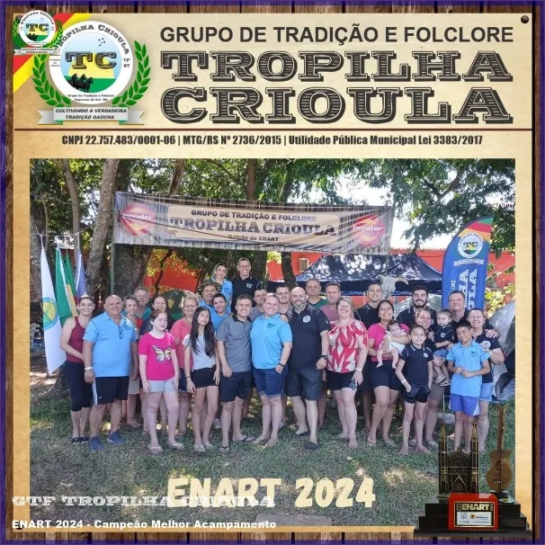
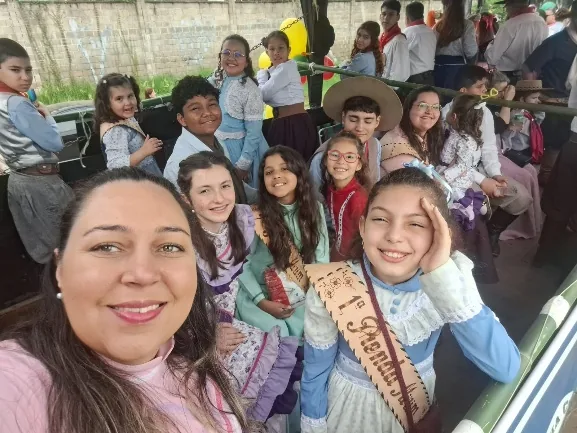
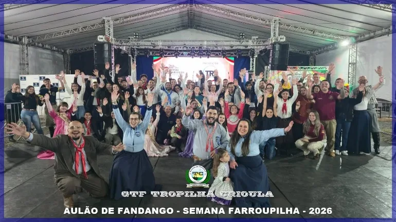
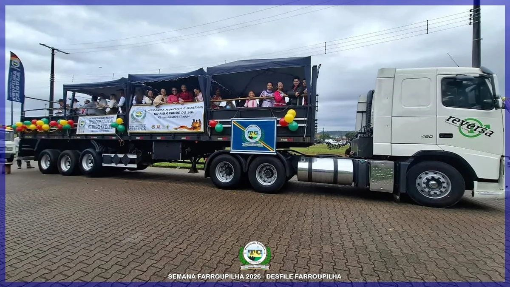
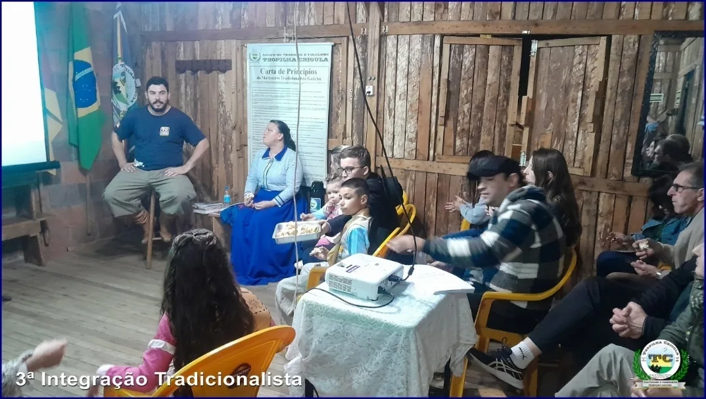
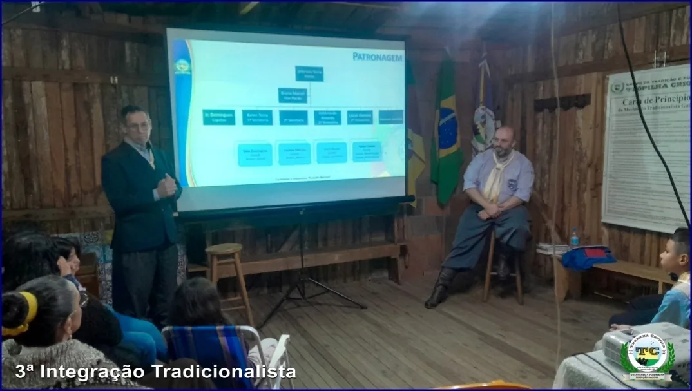
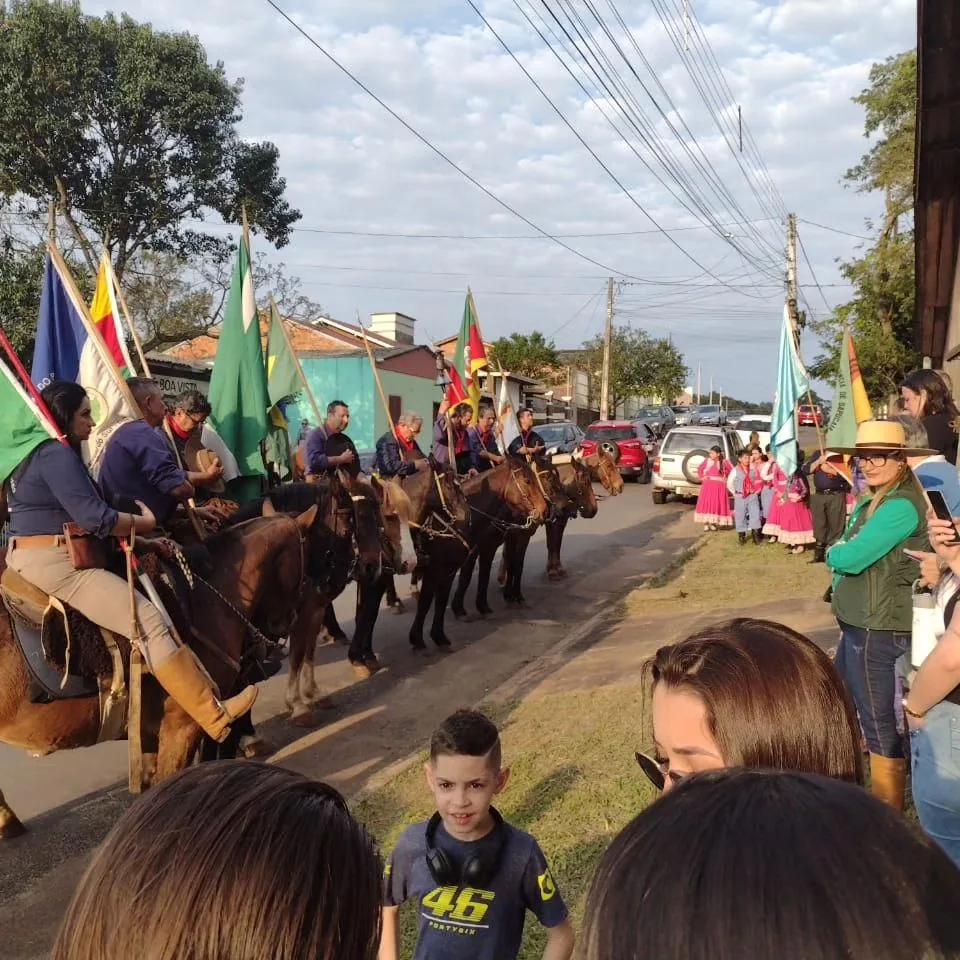

Eventos e conquistas
Tradição em movimento
Festejos, competições, encontros e reconhecimentos.
Conquistas
Reconhecimento pelo trabalho
- 2023
ENART: Campeão da 12ª Região Tradicionalista
- 2024
ENART: Campeão Estadual de Melhor Acampamento
- 2025
1º lugar no Concurso Cultural da 44ª Semana Farroupilha de Sapucaia do Sul
- 2026
Bicampeão do Concurso Cultural, na 45ª Semana Farroupilha
- 2026
1º lugar entre as entidades da 12ª RT no CTG na Escola (Sementes da Tradição)
- 2025/2026
Premiação Cultura Viva para Pontos de Cultura de Sapucaia do Sul, dois anos seguidos


Semana Farroupilha
No coração dos festejos
Desde 2023 o Tropilha integra a Coordenação Artística da Semana Farroupilha de Sapucaia do Sul. Mantém o galpão aberto no Parque Jayme Caetano Braum, com programação para a comunidade, e participa do hasteamento das bandeiras. Em 2026, na 45ª edição (12 a 20 de setembro), o Tropilha conquistou pela segunda vez o 1º lugar no Concurso Cultural.


Eventos da casa
Encontros para a família tropilhana
Bailes de aniversário: comemorações dos 8 anos (2023), 9 anos (2024) e 10 anos (15/03/2025), com jantar de churrasco e animação.
Integração Tradicionalista: encontros e palestras para associados sobre o Movimento Tradicionalista Gaúcho e o papel de cada um, realizados desde novembro de 2023.
Palestra de Indumentária Gaúcha: aberta à comunidade, sobre a história e o uso da pilcha (abril de 2024).
Cavalgada do Trabalhador, FECARS e Chama Crioula: participações em eventos campeiros e municipais.



Formação e representação
Presença em eventos externos
- Seminário de Elaboração de Projetos, na sede do MTG, em Porto Alegre (2023)
- Conferência Municipal de Cultura de Sapucaia do Sul (2023)
- Palestra Avançar Tchê, da Secretaria Estadual de Cultura, no 35 CTG, em Porto Alegre (2025)
- 34ª FECARS, Festa Campeira do RS: Tropilha na equipe organizadora
- 2º Acampamento da Declamação de Tapes (2025) e Chama’s da Poesia (2025 e 2026)
Próximos eventos
Acompanhe nas redes
As datas dos próximos eventos, cursos e inscrições são divulgadas no Instagram, no Facebook e pelo WhatsApp (51) 98088-1334.